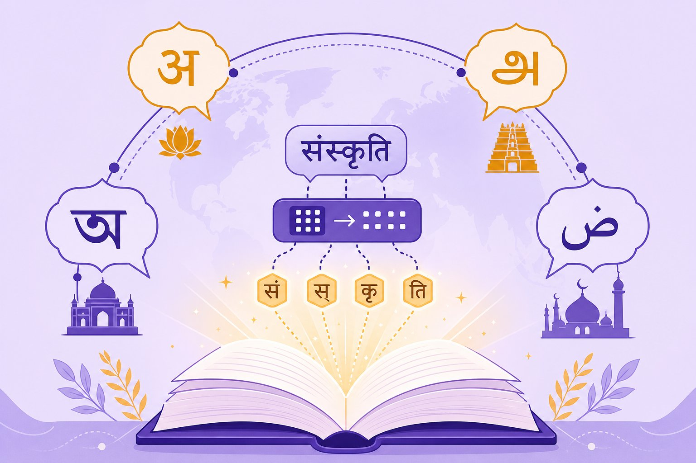

Indic & low-resource languages
AI speaks English fluently and 7,000 other languages… unevenly. India’s 22 official languages expose every weak joint: tokenizers, data, evals. Learn to measure the gap and close it — fertility, romanized text, translationese, and multilingual evals that don’t lie.

Figure 65.1 — Same meaning, triple the tokens, tenth the data. Multilingual AI is a resource problem wearing a modelling costume.
1. The three gaps (tokenizer, data, eval)
| Gap | What happens | How to see it |
|---|---|---|
| Tokenizer fertility | Hindi/Tamil split into 3–8× more tokens than English → slower, pricier, shorter effective context | Tokens-per-word on your corpus (Ch 46) |
| Data scarcity | Web is ~50%+ English; quality Indic text is thin, noisy, duplicated | Per-language quality audit (Ch 66) |
| Eval illusion | Translated benchmarks (translationese) overstate ability on native phrasing | Native-authored tests + human eval (Ch 61) |
2. Real-world Indic (messy by default)
- Romanized text: “mujhe refund chahiye” — no standard spelling. Normalise or train on raw variety; test on the mess users actually type.
- Code-switching: mid-sentence language flips break sentence-level assumptions. Evaluate on mixed utterances, not clean monolingual sets.
- Script matters: Devanagari vs roman vs transliterated — same language, different token streams. Cover all three in tests.
3. Closing the gap (practical playbook)
- Measure fertility first: pick/extend tokenizers with fair per-language cost; budget context accordingly.
- Curate, don’t just crawl: quality filters + dedup per language; synthetic data helps only with native-speaker verification (Ch 64).
- Native evals: commission native-authored tests; translated benchmarks are a ceiling, not a floor. Report per-language, per-script scores.
- Small + adapted beats big + generic: continued pre-training / LoRA on quality Indic data often beats a larger English-centric model (Ch 22, Ch 50).
Translationese trap
A model scoring 85% on English→Hindi translated MMLU can still fail a shopkeeper’s voice query. Translated benchmarks share English structure and idioms — they test translation tolerance, not language understanding. Always pair them with native-authored, native-judged tests before claiming multilingual ability.
Short notes
Three gaps: tokenizer fertility (cost/context), data scarcity (thin noisy corpora), eval illusion (translationese). Real Indic input is romanized, code-switched, multi-script — test on that mess. Close the gap: fair tokenizers, curated per-language data, native-authored evals with agreement scores, and small adapted models over big generic ones.
Point notes
- Fertility = cost × context.
- Test the mess users type.
- Translationese overstates skill.
- Native authors, native judges.
- Adapt small > prompt big.
MCQs
5 questions1. High tokenizer fertility for Hindi means:
2. “Translationese” in benchmarks causes:
3. “mujhe refund chahiye asap” is an example of:
4. The most trustworthy multilingual eval combines:
5. For a Hindi-first support bot, the usually-winning move is:
Practice questions
P1. Compare two tokenizers on 1,000 Hindi support messages: what do you measure, and how do you turn it into a cost decision?
Measure tokens/word (fertility), % of words split into 4+ pieces, and effective context left after a typical conversation. Convert: tokens × price/1K × monthly volume = cost delta; latency via benchmark. Decision: if tokenizer B cuts fertility 40% at equal quality, it pays for a re-tokenization + eval cycle within weeks. Report per-script (Devanagari + roman).
P2. Your model scores 82% on translated Hindi MMLU but users complain constantly. Design the eval that finds the truth.
Collect 300 real user queries (romanized + Devanagari + code-switched); have native speakers write reference answers and a rubric; blind-judge model vs baseline with 2 raters + κ; slice by script, intent, and query length. Expect the translated-benchmark score to overstate by 15–30 points — the gap localises to spelling variance and mixed-language intents.
P3. Argue for (or against) continued pre-training on 5GB of Hindi web text vs prompting a frontier model. Include the failure case of your choice.
For: 5GB quality-filtered Hindi + LoRA on a strong open base usually wins on cost, latency, and native phrasing for a narrow bot; data moat compounds. Against: if the web text is noisy/duplicated, you bake in garbage — quality audit first (Ch 66). Failure case of prompting frontier: fertility tax + translationese-style answers + per-token cost at scale; failure case of adapting: stale knowledge and weaker reasoning — mitigate with RAG over fresh docs.